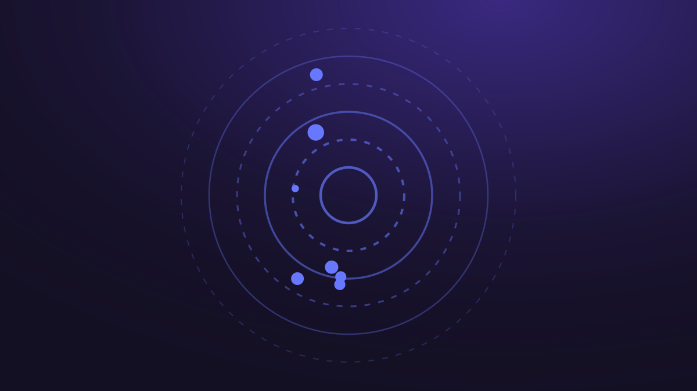

★ Выбор автораТренды агентной разработки — Claude и Codex, июль 2026
Срез по четырём направлениям за июль 2026 — Claude Code и Agent SDK, OpenAI Codex, MCP, практики комьюнити. Сквозной сюжет: обе экосистемы синхронно сделали мультиагентность штатным режимом.
Открыть презентацию